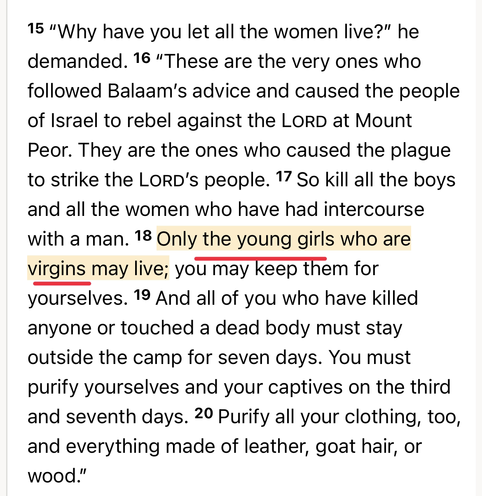
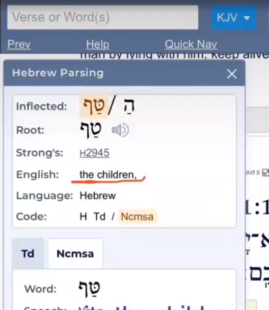
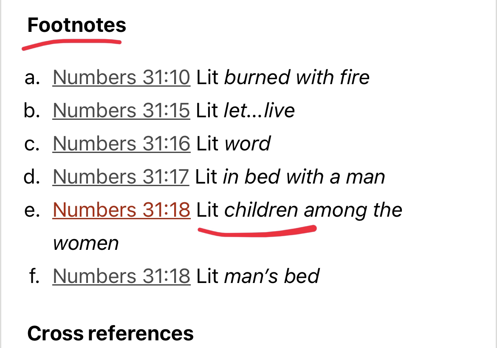
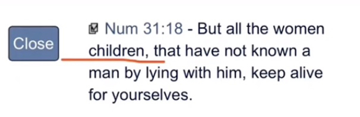
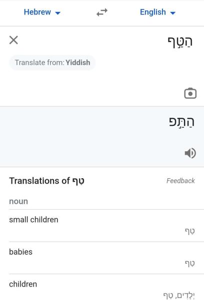
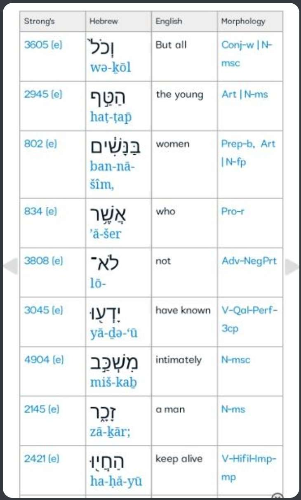
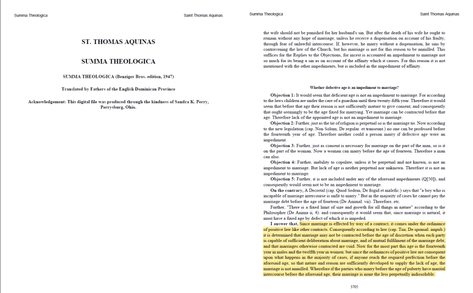
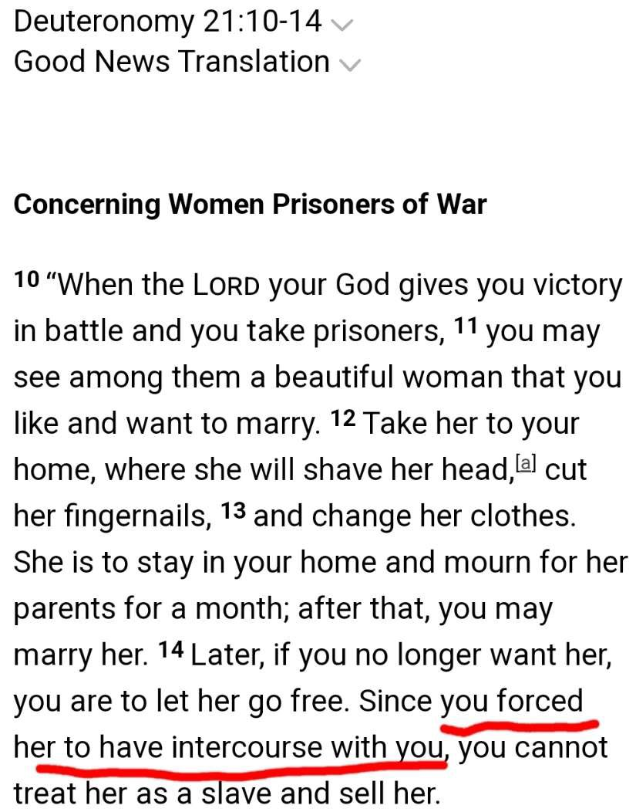

the bible allowed men to have sexual relations with children girls at one point The verse I refer to that you will see in is numbers 31:18

But I believe the Hebrew gives a deeper understanding of the verse
Numbers 31:18 (18)But all the young girls who have not known man by lying with him, keep alive for yourselves. I will show you that the Hebrew actually says "children"
let us see the meaning of this verse highlighted

So Christianity allowed children girls as concubines


OBJECTION 1: it doesn't say children it says 'young' as shown in the Hebrew parsing below
Refutation: The word can also mean
Small children
Babies
Children

OBJECTION 2: Jewish law states the age of adulthood is 12 for girls and 13 for boys
Response:
According to Jewish law [halacha] which is israek about the validity of marriage within border... its possible to marry a girl of any age but the girl has the ability to choose to marry when she is 12 and a half.
https://www.right-to-education.org/content/age/israel.html
And according to this website askmoses.com somebody asked what is the minimum age of marriage according to jewish law?
The response was in ancient (and not so ancient) times however, marriage was often-times celebrated at a rather young age. although we do not follow this dictum, technically speaking, a girl may be betrothed the moment she is born, and married at the age of three. [shulchan aruch, even haezer 37:1.] a boy may betroth and marry at the age of thirteen. [shulchan aruch, even haezer 43:1]
I gathered this refutation from
https://rasoulallah.net/en/articles/article/11614/
Objection 3: Okay Okay... they where captives but prove the children had sex with the soldiers
Deuteronomy 21:10-14 - Revised Standard Version (RSV)
Female Captives
10 "When you go forth to war against your enemies, and the Lord your God gives them into your hands, and you take them captive, 11 and see among the captives a beautiful woman, and you have desire for her and would take her for yourself as wife, 12 then you shall bring her home to your house, and she shall shave her head and pare her nails. 13 And she shall put off her captive's garb, and shall remain in your house and bewail her father and her mother a full month; after that you may go in to her, and be her husband, and she shall be your wife. 14 Then, if you have no delight in her, you shall let her go where she will; but you shall not sell her for money, you shall not treat her as a slave, since you have humiliated her.
So we have established:`
1. Christians believe jesus is the God of the Old Testament
2. He commanded Moses to capture children girls
3. After a month of mourning (the girls have to mourn for a month after God ordered the soldiers of moses
to kill the men, women, and boys), the men can now have sex with them
SORRY HERE IS THE HEBREW PARASING. THE OBJECTION TO THIS HEBREW PARASING IS IN THE SCREENSHOT I WILL REPLY TO AFTER THIS MESSAGE

Correction : According to Halakha , a girl can marry when she is 3 years and 1 day old and a boy can marry when he is 9yrs and a day old
Since marriage is effected by way of a contract, it comes under the ordinance of positive law like other contracts. Consequently according to law (cap. Tua, De sponsal. impub.) it is determined that marriage may not be contracted before the age of discretion when each party is capable of sufficient deliberation about marriage, and of mutual fulfilment of the marriage debt, and that marriages otherwise contracted are void. Now for the most part this age is the fourteenth year in males and the twelfth year in women: but since the ordinances of positive law are consequent upon what happens in the majority of cases, if anyone reach the required perfection before the aforesaid age, so that nature and reason are sufficiently developed to supply the lack of age, the marriage is not annulled. Wherefore if the parties who marry before the age of puberty have marital intercourse before the aforesaid age, their marriage is none the less perpetually indissoluble.
{St. Thomas Aquinas, Summa Theologica, Page 3705}

Christianity and Child Marriage
Disclaimer:
Use this note when Christians use the Age of Aisha argument
“But all the women children, that have not known a man by lying with him, keep alive for yourselves.”
(Numbers 31:18)
“I made you grow like a plant of the field. You grew and developed and entered puberty. Your breasts had formed and your hair had grown, yet you were stark naked. Later I passed by, and when I looked at you and saw that you were old enough for love, I spread the corner of my garment over you and covered your naked body. I gave you my solemn oath and entered into a covenant with you, declares the Sovereign Lord, and you became mine.”
(Ezekiel 16:7-8)
“If anyone is worried that he might not be acting honorably toward the virgin he is engaged to, and if his passions are too strong and he feels he ought to marry, he should do as he wants. He is not sinning. They should get married.”
(1 Corinthians 7:36)
——
Commentaries of Numbers 31:18
1.) Whedon’s Commentary on the Bible:
Verse 17-18.
The little ones — The object of the command to kill every male was to exterminate the whole nation, the cup of whose iniquity was full. For the righteousness of the mode see Joshua 6:21, note. Every woman who might possibly have been engaged in the licentious worship of Peor was to share the fate of the male children, to preserve Israel from all taint of that abomination. The pure maidens could be incorporated into Israel without peril to the national religion. Joshua 6:23-25, notes. They could not be treated as concubines, since the law against fornication was in full force, (Deuteronomy 22:25-29,) but they could be lawfully married to their captors (Deuteronomy 21:10-14).
——
2.) Peter Pett’s Commentary on the Bible:
Numbers 31:18
‘But all the women-children, who have not known man by lying with him, keep alive for yourselves.’ But the young women children were a different matter. They could be taken in marriage or as servants and would expect to accept the religion of their new husbands or masters. They would gradually be merged into Israel. Compare Deuteronomy 21:10-14. They would not feel the same responsibility for blood vengeance which was mainly incumbent on the males.
3.) NIV: The New American Commentary – An Exegetical And Theological Exposition of Holy Scripture:
… Only the young girls would be allowed to live so that they may be taken as wivesor slaves by Israelite men, according to the principles of holy war (Deut 20:13-14; 21:10-14). By this they could be brought under the umbrella of the covenant community of faith.
——
4.) John Dummelow’s Commentary on the Bible:
13-18. The male children are put to death in order that the race of idolaters may be extirpated. The older women are also slain as having been the prime cause of the apostasy, and likely to lead the people astray at a future time. The women-children, or young females, are spared, and are taken as slaves or wives, being probably adopted into the Hebrew nation as proselytes: cp. Deuteronomy 21:10-14. For the reason of such wholesale slaughter see Numbers 33:55; Deuteronomy 20:17-18; Joshua 23:13 and on Numbers 25:16-18.
——
Commentaries of Ezekiel 16:7-8
1.) John Gill’s Commentary:
“…thy breasts are fashioned; swelled and stood out; were come to a proper size and shape, as in persons grown and marriageable; see Sol 8:10…”
https://www.studylight.org/commentaries/bcc/ezekiel-16.html
2.) Jamieson-Fausset-Brown Bible Commentary:
”Thou wast of marriageable age, but none was willing to marry thee, naked as thou wast. I then regarded thee with a look of grace when the full time of thy deliverance was come (Genesis 15:13, Genesis 15:14; Acts 7:6, Acts 7:7). It is not she that makes the advance to God, but God to her; she has nothing to entitle her to such notice, yet He regards her not with mere benevolence, but with love, such as one cherishes to the person of his wife (Song of Solomon 1:3-6; Jeremiah 31:3; Malachi 1:2).”
https://biblehub.com/commentaries/jfb/ezekiel/16.htm
3.) Jewish Talmud:
“The Gemara asks: Until what age is one still considered a minor? Rav Ḥisda said: A girl until she is three years and one day old, and a boy until he is nine years and one day old, for these are the ages from which a sexual act in which they participate is considered a sexual act. Some say: A girl eleven years and one day old and a boy of twelve years and one day old, as that is the age at which they are considered adults in this regard. This age is only approximate, as the age of majority for both this, the boy, and that, the girl, is at the onset of puberty in accordance with the verse: “Your breasts were formed and your hair was grown” (Ezekiel 16:7).”
Berakhot 24a:12,
https://www.sefaria.org/Ezekiel.16.7?lang=bi&with=Berakhot&lang2=en
4.) John Calvin:
“Here God speaks grossly, yet according to the people’s comprehension. For he personates a man struck with the beauty of a girl and offering her marriage. But God is not affected as men are, as we well know, so that it is not according to his nature to love as young men do.”
https://www.studylight.org/commentaries/cal/ezekiel-16.html#8
Commentaries of 1 Corinthians 7:36
1.) ”Puberty was the time when many, if not most, girls were married. A young woman beyond puberty and not engaged could be in a difficult situation. Treggiari states that ‘for the girl’s family, it was important to have a husband ready to marry her at that short-lived and not precisely predictable moment when she was ‘ripe’.’ Beyond this moment is the time when a girl might be considered hyperakmos. […] The ancient sources stress over and over: female virginity is valuable, but precarious and easily lost. The only guard against it is early marriage.”
(Source: John W. Martens, “Fathers and Daughters in 1 Corinthians 7:36–38: The Social Implications of Marriage in Early Christian Families”, T&T Clark Handbook of Children in the Bible and the Biblical World, eds. Sharon Betsworth and Julie Faith Parker (London: T&T Clark, 2019), p. 343.)
——
2.) “[t]he word hyperakmos (‘getting along in years’…used only here in the NT) can refer to any woman after menstruation has occurred…What is behind the situation depicted here is probably the view of the father that a Christian should not live on the level of the body but on the level of the spirit (see comments 7:1). But the daughter feels differently and would like to marry.”
(Source: Verlyn D. Verbrugge, “1 Corinthians”, in The Expositor’s Bible Commentary: Romans-Galatians, Revised Edition, eds. Tremper Longman III and David E. Garland (Grand Rapids, Michigan: Zondervan, 2008). p. 327.)
He also adds that Paul used the word “parthenos” (virgin), which:
“…is the most generic word that can be used to cover all situations for young girls who are of marriageable age but are not yet married.”
——
3.) However, Bruce Winter offered an alternative translation of the word “hyperakmos”. He explained that it could mean (emphasis ours):
“…the reaching of puberty and reproduction for women or sexual passion for men.”
Source: Bruce Winter, “Puberty or Passion? The Referent of ΥΠΕΡΑΚΜΟΣ in 1 Corinthians 7:36”, Tyndale Bulletin, 49, no. 1 (1998): 78,
https://legacy.tyndalehouse.com/tynbul/Library/TynBull_1998_49_1_05_Winter_1Cor7_Puberty.pdf
Christian authorities who had no issue with child marriage
1.) The early church father Tertullian believed that people should be married when they are 12 years old:
“Time even the heathens observe, that, in obedience to the law of nature, they may render their own fights to the (different) ages. For their females they despatch [sic] to their businesses from (the age of) twelve years, but the male from two years later; decreeing puberty (to consist) in years,++ not in espousals or nuptials. “Housewife” one is called, albeit a virgin, and “house-father,” albeit a stripling. By us not even natural laws are observed; as if the God of nature were some other than ours!”**
(Source: Tertullian, On the Veiling of Virgins, Chapter XI,
http://www.earlychristianwritings.com/text/tertullian28.html
2.) The famous Christian theologian John Calvin believed that someone can get married when they reach puberty:
“[a] child needed to be both physically and morally mature enough to enter marriage…At minimum, the child needed to reach puberty…”
(Source: Ibid., p. 204.)
“[i]t has always been judged, and properly so, that marriage is not legitimate except between those who have reached puberty.”
(Source: Ibid., p. 213.)
John Calvin didn’t even see anything illegal with an older man marrying a young girl(although he personally disliked it) Calvin’s friend Guillaume Farel who at 69 married a girl much younger than him, and Calvin was fine with that
👇
“Farel, now aged sixty-nine, was engaged to a mere girl, the daughter of his refugee housekeeper. What is more, she had been for some time, and still was, living under the same roof with him” (T.H.L Parker, John Calvin: A Biography [Louisville: Westminster John Knox Press, 2007], p. 184).
“…no, nothing can be done about it. Farel has given his word to the girl and he must keep it. The marriage is not illegal and no one has a right to break it off” (Ibid.).
As for the age of the woman, she is described as a “a teenaged woman over fifty years his junior” (https://www.desiringgod.org/articles/the-french-firebrand).
3.) the great Catholic theologian Thomas Aquinas allowed betrothals to occur as early as age 7, and sometimes even earlier:
“…the age of seven years is fixed reasonably enough by law for the contracting of betrothals, for since a betrothal is a promise of the future…it follows that they are within the competency of those who can make a promise in some way, and this is only for those who can have some foresight of the future…”
( source : Thomas Aquinas, Summa Theologica: Supplement to the Third Part, ed. Anthony Uyl (Ontario, Canada: Devoted Publishing, 2018), p. 138.)
4.) Augustine of Hippo was engaged to an 11 year old but broke things off in favor of a monastic lifestyle
—-
5.)

Two Challenges to Any Christian that uses the Aisha argument
Show me one verse in the entire Bible that can be used to condemn the Prophet peace be upon him’s marriage with Aisha or a verse which condemns minor marriage altogether or a verse that outlines an age of consent. If you can’t do that then it proves that you don’t get your morality from the Bible, you get it from secular liberalism, and if that’s the case you shouldn’t be calling yourselves Christians.
Outline a syllogism of how the Aisha argument objectively makes Islam false. How does the fact that the Prophet peace be upon him married Aisha effect whether or not Islam is true? I don’t want emotion or opinions or subjective arguments. Prove to me why objectively the Aisha argument disproves Islam. If you can’t do that then you’ve proven that the Aisha argument is nothing more than an emotional argument and has no bearing on the validity of Islam.